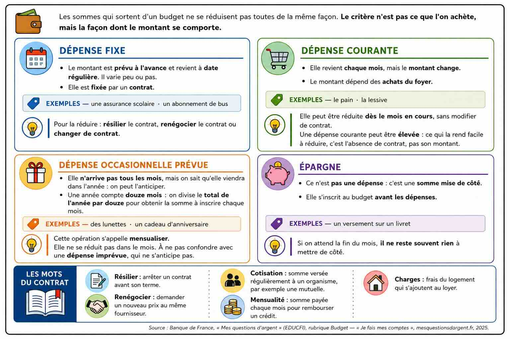
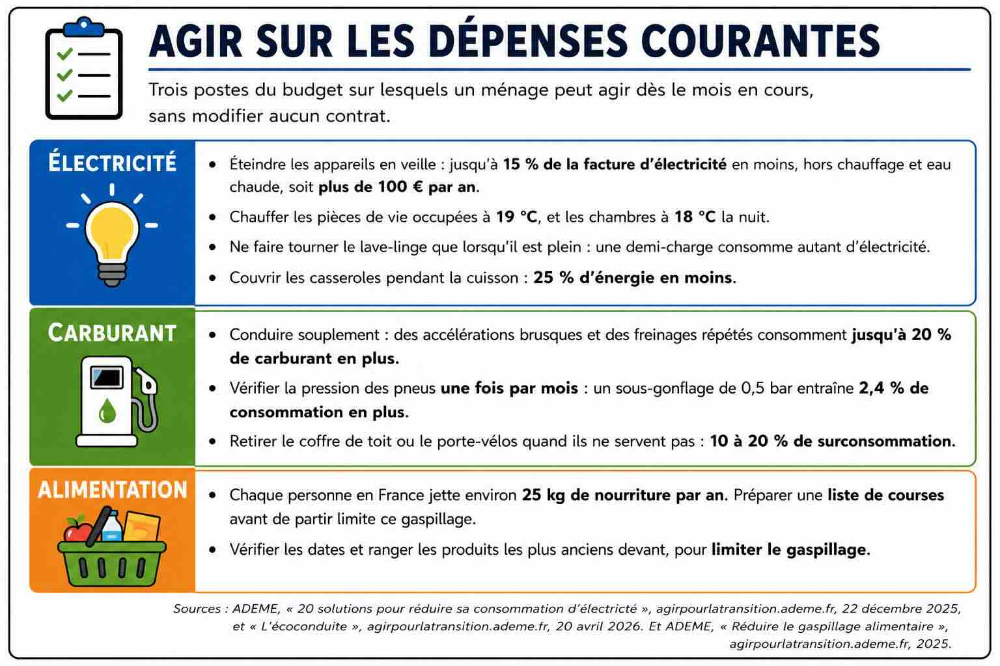
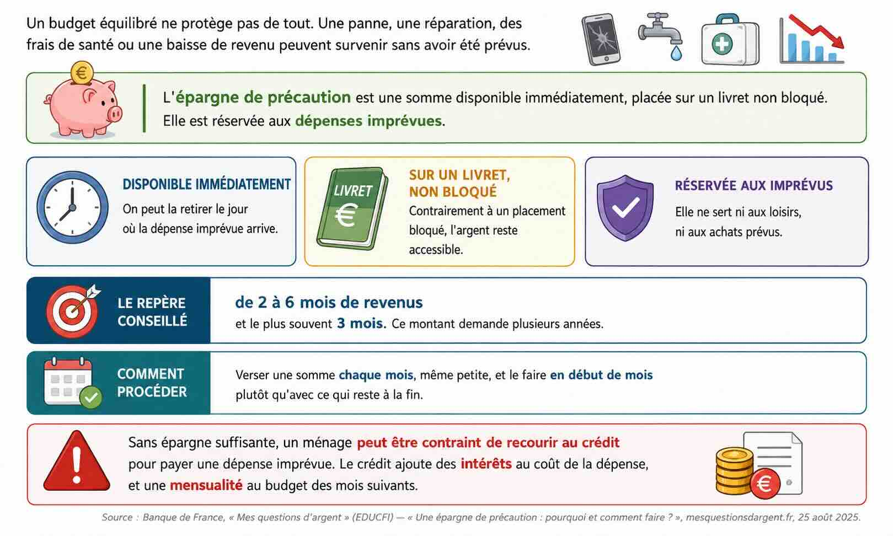

Classer les sommes qui sortent d'un ménage, construire le budget d'un mois, lire son équilibre et calculer une épargne de précaution.
Séance 1
Objectif : Classer une somme selon qu'elle est une dépense fixe, une dépense courante, une dépense occasionnelle ou une épargne.
Samir et Nadia Bellanger vivent ensemble. Chaque mois, leur ménage reçoit 2 798 €.
Chaque fin de mois, ils font le même constat : ils ne savent pas comment cet argent a été dépensé.
Leur conseiller bancaire leur donne un conseil : noter pendant un mois toutes les sommes qui sortent, puis les classer en quatre familles.
Pendant un mois, ils ont noté : le loyer et les charges, les courses alimentaires, un manteau acheté en novembre, le versement mensuel sur le livret, la mensualité du crédit auto, le carburant, la cotisation de la mutuelle, les cadeaux de fin d'année.

Document en quatre encadrés, un par famille du budget, suivis d'un encadré de vocabulaire. Phrase d'entrée : le critère n'est pas ce que l'on achète, mais la façon dont le montant se comporte. Premier encadré, la dépense fixe : le montant est prévu à l'avance et revient à date régulière, il varie peu ou pas ; elle est fixée par un contrat ; exemples, une assurance scolaire, un abonnement de bus ; pour la réduire, il faut résilier le contrat, renégocier le contrat ou changer de contrat. Deuxième encadré, la dépense courante : elle revient chaque mois mais le montant change ; le montant dépend des achats du foyer ; exemples, le pain, la lessive ; elle peut être réduite dès le mois en cours, sans modifier de contrat ; une dépense courante peut être élevée : ce qui la rend facile à réduire, c'est l'absence de contrat, pas son montant. Troisième encadré, la dépense occasionnelle prévue : elle n'arrive pas tous les mois, mais on sait qu'elle viendra dans l'année, on peut l'anticiper ; une année compte douze mois, donc on divise le total de l'année par douze pour obtenir la somme à inscrire chaque mois ; exemples, des lunettes, un cadeau d'anniversaire ; cette opération s'appelle mensualiser ; elle ne se réduit pas dans le mois, et il ne faut pas la confondre avec une dépense imprévue, qui ne s'anticipe pas. Quatrième encadré, l'épargne : ce n'est pas une dépense, c'est une somme mise de côté ; elle s'inscrit au budget avant les dépenses ; exemple, un versement sur un livret ; si on attend la fin du mois, il ne reste souvent rien à mettre de côté. Cinquième encadré, les mots du contrat : résilier, c'est arrêter un contrat avant son terme ; renégocier, c'est demander un nouveau prix au même fournisseur ; une cotisation est une somme versée régulièrement à un organisme, par exemple une mutuelle ; une mensualité est la somme payée chaque mois pour rembourser un crédit ; les charges sont les frais du logement qui s'ajoutent au loyer.
Source : Banque de France, « Mes questions d'argent » (EDUCFI), rubrique Budget — « Je fais mes comptes », mesquestionsdargent.fr, 2025.
1. À partir de la situation et du document 1 :
| Somme | Famille du budget |
|---|---|
| Le loyer et les charges | |
| Les courses alimentaires | |
| Un manteau acheté en novembre | |
| Le versement mensuel sur le livret | |
| La mensualité du crédit auto | |
| Le carburant | |
| La cotisation de la mutuelle | |
| Les cadeaux de fin d'année |
Le critère de chaque famille est écrit en haut de son encadré, dans le document 1.
Une seule question pour chaque somme : le montant est-il toujours le même ?
Classer la mutuelle en dépense courante parce qu'elle concerne la santé.
L'information sur le contrat est dans le premier encadré du document 1.
Repérer ce qui fixe le montant, puis dire ce qu'il faut faire pour le changer.
Expliquer seulement que le montant est stable. La question porte sur la difficulté à le réduire.
L'information sur le montant d'une dépense courante est dans le deuxième encadré du document 1.
Chercher ce qui fait varier le montant, puis dire qui décide de ce montant.
Répondre « elle coûte moins cher ».
Les trois mots se suivent dans la dernière ligne du premier encadré du document 1.
Relever veut dire recopier. Rien n'est à inventer.
Proposer « acheter moins ». Cela ne vaut que pour une dépense courante.
Le troisième encadré du document 1 indique ce qu'on fait d'un total annuel.
Diviser le total de l'année par douze, parce qu'une année compte douze mois.
Considérer qu'une dépense qui n'arrive pas tous les mois n'a pas à figurer au budget.
Le raisonnement se construit à partir du troisième encadré du document 1.
Se demander ce qui se passe le mois du paiement.
Répondre « on dépense trop ». Le problème n'est pas le montant, c'est l'absence de prévision.
Vocabulaire d’appui
1. Une dépense courante revient chaque mois et son montant change. Répondre en cochant une case.
Le corrigé. Vrai
Explication. Le document 1 donne ces deux critères ensemble.
2. Indiquer comment on mensualise une dépense annuelle, en cochant une seule case.
Le corrigé. En la divisant par 12
Explication. Une année compte 12 mois.
3. Indiquer la famille d'une dépense qui n'arrive qu'une fois dans l'année, en cochant une seule case.
Le corrigé. Une dépense occasionnelle
Explication. Elle n'arrive pas tous les mois, mais elle existe bien dans l'année.
4. Indiquer la famille dont le montant dépend des achats du foyer, en cochant une seule case.
Le corrigé. Les dépenses courantes
Explication. Ce sont celles dont le montant change selon ce que le foyer achète.
5. Indiquer à quel moment une dépense courante peut être réduite, en rédigeant une phrase.
Le corrigé. Dès le mois en cours, sans modifier de contrat.
Explication. C'est ce qui la distingue de la dépense fixe, qui suppose d'agir sur un contrat.
Score : —
Séance 2
Objectifs : 1. Construire le budget mensuel du ménage. 2. Calculer le solde de ce budget.
Le relevé du mois est complet. Samir et Nadia Bellanger reportent chaque somme dans un tableau, famille par famille. Ils y ajoutent les sommes qu'ils avaient oubliées : les vêtements, les loisirs, les cadeaux, les frais de santé non remboursés.
Le conseiller bancaire leur explique la lecture du tableau : si le total des sorties est supérieur aux ressources, le solde est négatif et le budget est déficitaire ; si le total des sorties est inférieur aux ressources, le solde est positif.
Il ajoute qu'un solde positif ne signifie pas que le budget est confortable : une marge étroite laisse peu de place à une dépense imprévue.
Il leur propose un objectif : réduire de 10 % leurs dépenses courantes.
| Famille | Poste | Montant |
|---|---|---|
| Fixes | Logement : loyer, charges et assurance, aide déduite | 579,00 € |
| Fixes | Mensualité du crédit auto | 210,00 € |
| Fixes | Mutuelle | 96,00 € |
| Fixes | Abonnements téléphone et internet | 78,00 € |
| Fixes | Assurance automobile | 52,00 € |
| Courantes | Alimentation | 720,00 € |
| Courantes | Carburant | 185,00 € |
| Courantes | Électricité | 93,00 € |
| Courantes | Entretien et hygiène | 65,00 € |
| Occasionnelles | Vêtements : 1 320,00 € sur l'année | …………… |
| Occasionnelles | Loisirs et sorties | 90,00 € |
| Occasionnelles | Cadeaux et fêtes | 45,00 € |
| Occasionnelles | Santé non remboursée | 40,00 € |
| Épargne | Versement sur le livret | 100,00 € |
| TOTAL DES SORTIES | …………… | |
| RESSOURCES | 2 798,00 € | |
| SOLDE | …………… |
Source : Document pédagogique. Données fictives, construites d'après Banque de France, « Mes questions d'argent » (EDUCFI), rubrique Budget — « Je fais mes comptes », mesquestionsdargent.fr, 2025.
1. À partir de la situation et du document 2 :
Les ressources figurent sur l'avant-dernière ligne du tableau, le logement sur la première.
Relever veut dire recopier le montant écrit dans la troisième colonne du tableau.
Recopier le montant d'une autre ligne. La colonne de gauche donne la famille, celle du milieu le poste.
Le total de l'année figure dans le tableau, sur la ligne des vêtements.
Partager le total de l'année en douze parts égales.
Multiplier par 12 au lieu de diviser. Le montant d'un mois est plus petit que celui de l'année.
La première colonne du tableau donne la famille de chaque ligne.
Traiter une famille à la fois, en n'additionnant que les lignes qui portent le même nom.
Additionner les lignes dans l'ordre du tableau, sans trier par famille.
Dépenses fixes 1 015 € · dépenses courantes 1 063 € · dépenses occasionnelles 285 € · épargne 100 €.
Utiliser les quatre résultats obtenus à la question précédente.
Additionner les quatre totaux, épargne comprise.
Oublier l'épargne, au motif qu'elle n'est pas une dépense. Cet argent quitte quand même le compte.
Les ressources figurent dans le tableau, sur l'avant-dernière ligne.
Retirer aux ressources le total des sorties. Le calcul se fait toujours dans ce sens.
Confondre « il reste de l'argent » et « le budget est confortable ».
Le signe du résultat de la question 1.5 donne la réponse.
Comparer le résultat de la question 1.5 à zéro.
Confondre « il reste de l'argent » et « le budget est confortable ». Un solde de 335 € reste une marge étroite.
Dépenses fixes 1 015 € · ressources 2 798 €.
Un pourcentage se calcule en divisant la partie par le total, puis en multipliant par 100.
Diviser la partie par le total, puis multiplier par 100.
Diviser les ressources par les dépenses fixes. On obtient alors un nombre supérieur à 100.
Un pourcentage se traduit en euros sur une base de 100 €.
Traduire le pourcentage en euros sur une base de 100.
Répondre seulement « 36 € » sans dire ce que cette somme représente.
La distinction figure dans les deux premiers encadrés du document 1, en séance 1.
Reprendre la distinction établie à la question 1.3 de la séance 1.
Cocher les dépenses occasionnelles.
Dépenses courantes 1 063 €.
Diminuer de 10 %, c'est retirer 10 € sur chaque tranche de 100 €.
Multiplier le total par 10, puis diviser par 100.
Retirer 10 € au total, au lieu de 10 %.

Document en trois entrées sur les moyens de réduire les dépenses courantes. Phrase d'entrée : trois postes du budget sur lesquels un ménage peut agir dès le mois en cours, sans modifier aucun contrat. Première entrée, l'électricité : éteindre les appareils en veille peut réduire la facture d'électricité de quinze pour cent au maximum, hors chauffage et eau chaude, soit plus de cent euros par an ; chauffer les pièces de vie occupées à dix-neuf degrés et les chambres à dix-huit degrés la nuit ; ne faire tourner le lave-linge que lorsqu'il est plein, car une demi-charge consomme autant d'électricité ; couvrir les casseroles pendant la cuisson, ce qui consomme vingt-cinq pour cent d'énergie en moins. Deuxième entrée, le carburant : une conduite avec des accélérations brusques et des freinages répétés consomme jusqu'à vingt pour cent de carburant en plus qu'une conduite souple ; vérifier la pression des pneus une fois par mois, car un sous-gonflage d'un demi-bar entraîne deux virgule quatre pour cent de consommation en plus ; retirer le coffre de toit ou le porte-vélos quand ils ne servent pas, car ils entraînent une surconsommation de dix à vingt pour cent. Troisième entrée, l'alimentation : chaque personne en France jette environ vingt-cinq kilogrammes de nourriture par an, et préparer une liste de courses avant de partir limite ce gaspillage ; vérifier les dates et ranger les produits les plus anciens devant, pour limiter le gaspillage.
Source : ADEME, « 20 solutions pour réduire sa consommation d'électricité », agirpourlatransition.ademe.fr, 22 décembre 2025, et « L'écoconduite », agirpourlatransition.ademe.fr, 20 avril 2026.
2. À partir du document 3 :
Les dépenses courantes du tableau sont l'alimentation, le carburant, l'électricité et l'entretien.
Choisir deux lignes de dépenses courantes, puis chercher dans le document 3 une action qui les fait baisser.
Proposer de changer d'assurance ou de déménager. Ce sont des dépenses fixes.
Vocabulaire d’appui
1. Un solde négatif signifie que les sorties dépassent les ressources. Répondre en cochant une case.
Le corrigé. Vrai
Explication. Le résultat de la soustraction passe alors sous zéro.
2. Indiquer le calcul qui donne le solde d'un budget, en cochant une seule case.
Le corrigé. Ressources − sorties
Explication. Le solde mesure ce qui reste.
3. Indiquer le poste qui n'est pas une dépense courante, en cochant une seule case.
Le corrigé. Assurance automobile
Explication. Son montant est fixé par un contrat.
4. Indiquer les sorties sur lesquelles le ménage peut agir dès le mois en cours, en cochant plusieurs cases.
Le corrigé. L'alimentation, Le carburant, L'électricité
Explication. Les trois premières sont des dépenses courantes.
5. Indiquer ce que devient le solde si les ressources baissent et que les sorties ne changent pas, en rédigeant une phrase.
Le corrigé. Le solde diminue, et il peut devenir négatif.
Explication. Le solde est une différence : si le premier terme baisse et que le second ne bouge pas, la différence baisse aussi.
Score : —
Séance 3
Objectifs : 1. Expliquer le rôle d'une épargne de précaution. 2. Évaluer la capacité d'un ménage à payer une dépense imprévue sans emprunter.
Le budget du mois est établi : 2 798 € de ressources, 2 463 € de sorties, 335 € de solde. Le versement sur le livret est de 100 € par mois.
En février, le chauffe-eau tombe en panne. Le plombier annonce 890 € pour le remplacer, à payer sous quinze jours.
Samir consulte le livret : il contient 1 400 €, mis de côté en quatorze mois.
Après la panne, Samir propose de porter le versement mensuel sur le livret de 100 € à 250 €. Nadia estime que cette somme est trop élevée.

Document sur l'épargne de précaution. Définition : l'épargne de précaution est une somme disponible immédiatement, placée sur un livret non bloqué, et réservée aux dépenses imprévues. Trois caractéristiques : on peut la retirer le jour où la dépense imprévue arrive ; elle est placée sur un livret, donc elle n'est pas bloquée ; elle est réservée aux dépenses imprévues, et ne sert ni aux loisirs ni aux achats prévus. Le repère conseillé : de deux à six mois de revenus, et le plus souvent trois mois. Ce montant demande plusieurs années. Comment procéder : verser une somme chaque mois, même petite, et le faire en début de mois plutôt qu'avec ce qui reste à la fin. Un ménage dont le budget est équilibré peut manquer d'argent disponible au moment de payer : avoir un solde positif chaque mois ne suffit pas si la somme n'est pas mise de côté. Dernier point : sans épargne suffisante, un ménage peut être contraint de recourir au crédit pour payer une dépense imprévue. Le crédit ajoute des intérêts au coût de la dépense, et une mensualité au budget des mois suivants.
Source : Banque de France, « Mes questions d'argent » (EDUCFI) — « Une épargne de précaution : pourquoi et comment faire ? », mesquestionsdargent.fr, 25 août 2025.
1. À partir de la situation et du document 4 :
Le contenu du livret et le prix de la réparation figurent dans la situation.
Retirer le coût de la réparation à ce que le livret contenait.
Additionner les deux sommes au lieu de les soustraire.
Le livret contenait 1 400 € et il en reste 510 €. Le versement est de 100 € par mois.
Le calcul se fait en deux étapes : la somme manquante, puis le nombre de versements.
Chercher la somme manquante, puis la diviser par le versement mensuel.
Répondre 8 mois. Après huit versements il manquerait encore 90 € : il faut un neuvième versement.
Le repère conseillé figure au milieu du document 4, sur la ligne noire.
Multiplier les revenus d'un mois par trois.
Utiliser le total des sorties, 2 463 €, au lieu des revenus. Le document parle de mois de revenus.
Rappel : après la réparation, il reste 510 € sur le livret. Le versement est de 100 € par mois.
Le livret ne repart pas de zéro : il contient déjà la somme trouvée à la question 1.1.
Retirer d'abord ce qui reste sur le livret, puis diviser la somme manquante par le versement mensuel.
Diviser 8 394 par 100 sans retirer les 510 € déjà présents. Le ménage ne repart pas de zéro.
Rappel : la durée obtenue à la question 1.4 est de 79 mois.
Une année compte 12 mois. Le reste de la division donne les mois.
Diviser le nombre de mois par 12 : le quotient donne les années, le reste donne les mois.
Écrire 6,58 ans. Une durée se dit en années et en mois, pas en années à virgule.
Le dernier encadré du document 4 traite de cette situation.
Rapprocher le délai de paiement et l'argent disponible.
Répondre « parce qu'il est pauvre ».
Le document 4 nomme un effet sur le coût, et un effet sur les mois suivants.
Distinguer ce que le crédit ajoute au coût, et ce qu'il ajoute au budget.
Donner deux fois la même conséquence sous deux formulations différentes.
2. À partir de la situation :
Le solde du budget figure dans la première ligne de la situation.
Regarder le solde du budget avant de choisir.
Cocher deux cases.
Le solde du budget est de 335 €. Le versement actuel est de 100 € par mois.
Les chiffres utilisables sont le solde de 335 €, les 36 % de dépenses fixes et les 106,30 € d'économie possible.
Énoncer la position, puis l'appuyer sur deux chiffres exacts.
Donner un avis sans chiffre, ou citer un chiffre sans dire ce qu'il démontre.
Vocabulaire d’appui
1. Une épargne de précaution doit être placée sur un compte bloqué. Répondre en cochant une case.
Le corrigé. Faux
Explication. Elle doit rester disponible le jour de la dépense imprévue.
2. Indiquer le repère conseillé pour une épargne de précaution, en cochant une seule case.
Le corrigé. De 2 à 6 mois de revenus
Explication. Le document 4 donne cette fourchette, et retient le plus souvent 3 mois.
3. Indiquer la situation qui n'est pas une dépense imprévue, en cochant une seule case.
Le corrigé. Le loyer du mois
Explication. Le loyer est une dépense fixe, connue d'avance.
4. Indiquer ce que permet une épargne de précaution, en cochant plusieurs cases.
Le corrigé. Payer une réparation sans emprunter, Éviter de payer des intérêts, Garder le même solde les mois suivants
Explication. Elle évite un crédit, mais elle ne crée pas de ressources.
5. Indiquer ce qu'un crédit ajoute au coût d'une réparation, en rédigeant une phrase.
Le corrigé. Des intérêts, qui rendent la réparation plus chère que son prix de départ.
Explication. C'est pour cette raison que l'épargne de précaution coûte moins cher qu'un crédit.
Score : —